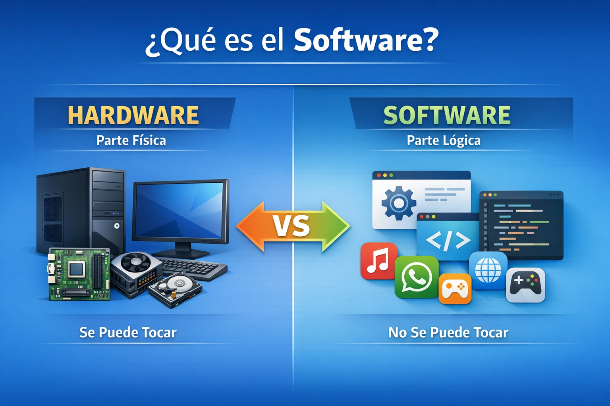

Parte lógica del computador
El software es el conjunto de programas, instrucciones y datos que permiten el funcionamiento de una computadora. A diferencia del hardware, el software es intangible, es decir, no se puede tocar.

Controla el hardware y permite que el sistema funcione correctamente.
Ej: Windows, Linux, macOSPermite al usuario realizar tareas específicas como escribir, navegar o jugar.
Ej: Word, Chrome, WhatsAppHerramientas utilizadas para crear otros programas y aplicaciones.
Ej: Visual Studio Code, compiladoresSoftware Libre: se puede usar y modificar (Ej: Linux)
Software Propietario: tiene restricciones (Ej: Windows)
El software es esencial porque permite que los dispositivos electrónicos funcionen y realicen tareas útiles como estudiar, trabajar, comunicarse y entretenerse.
El software ha evolucionado desde programas simples hasta sistemas complejos como inteligencia artificial, aplicaciones móviles y plataformas modernas que usamos diariamente.